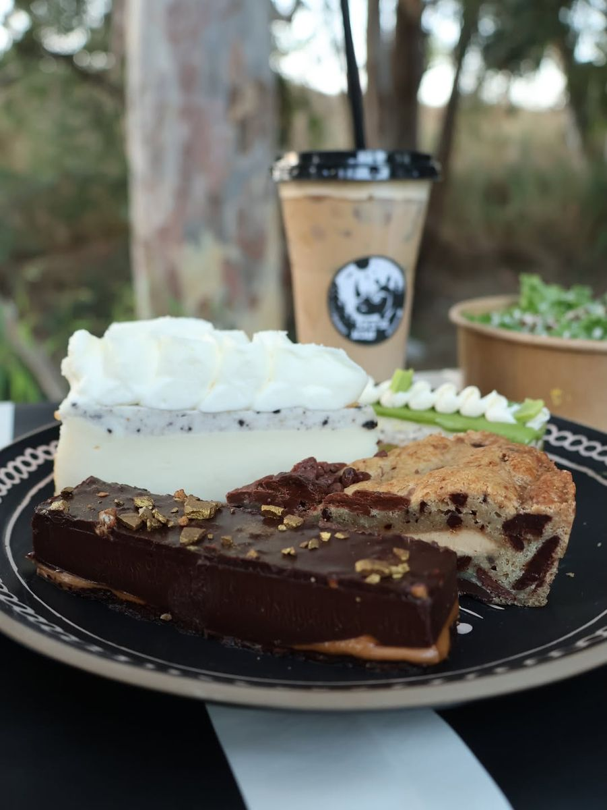
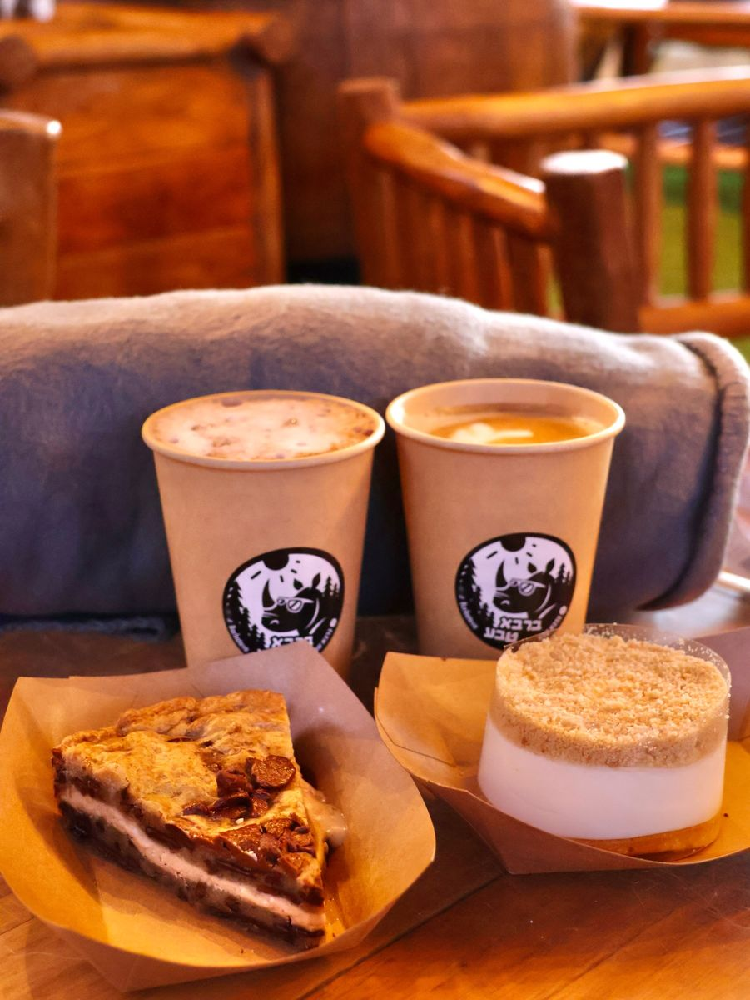
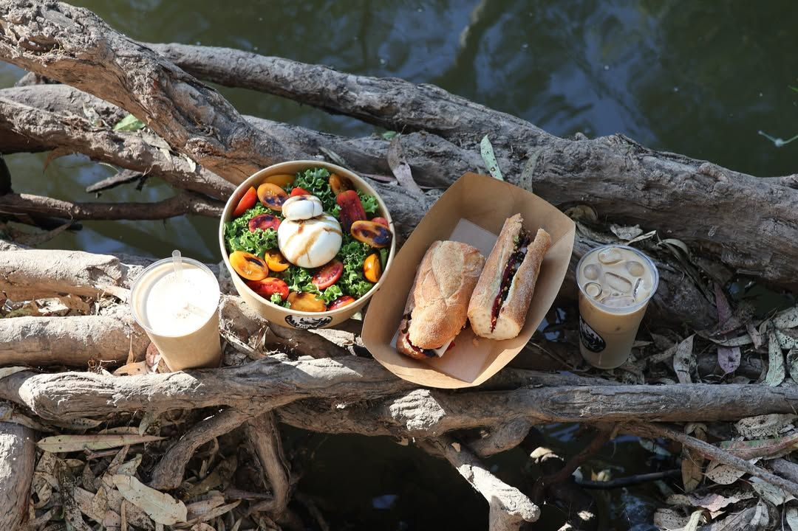
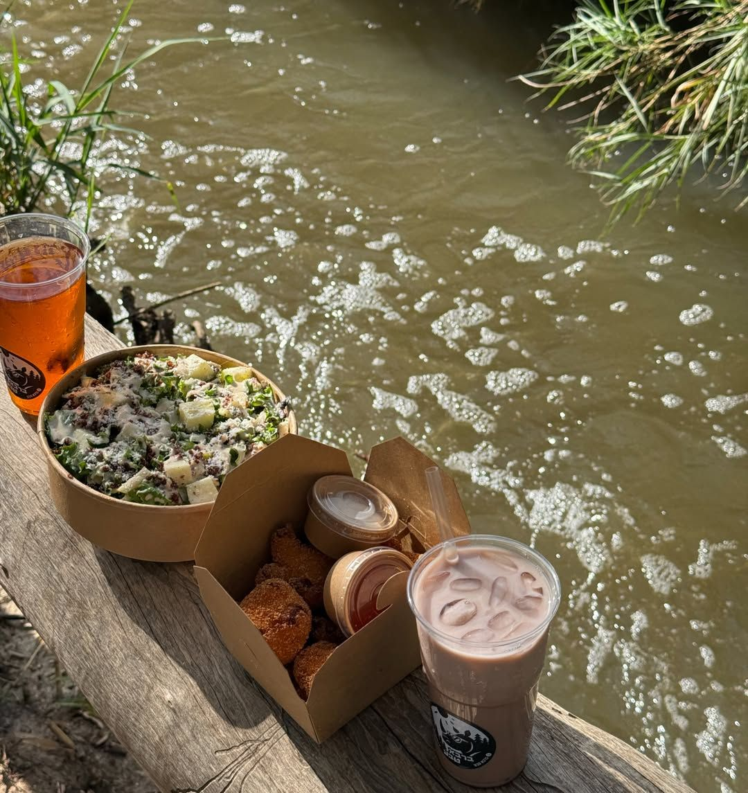
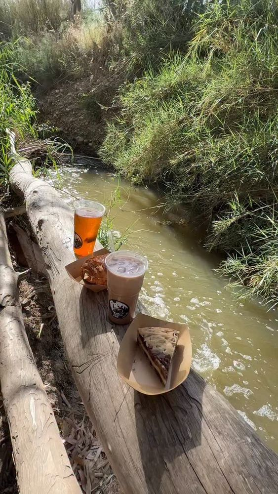
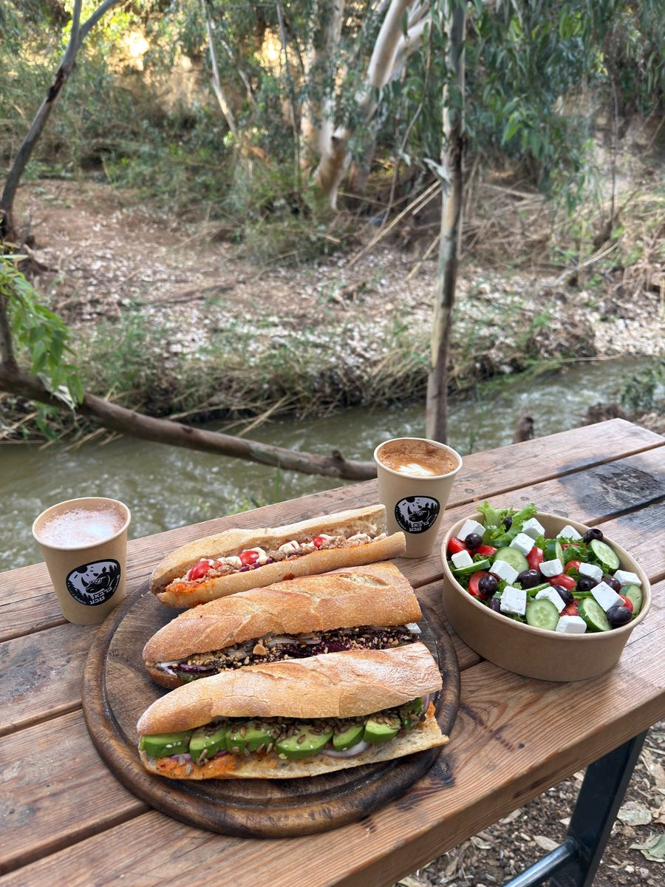
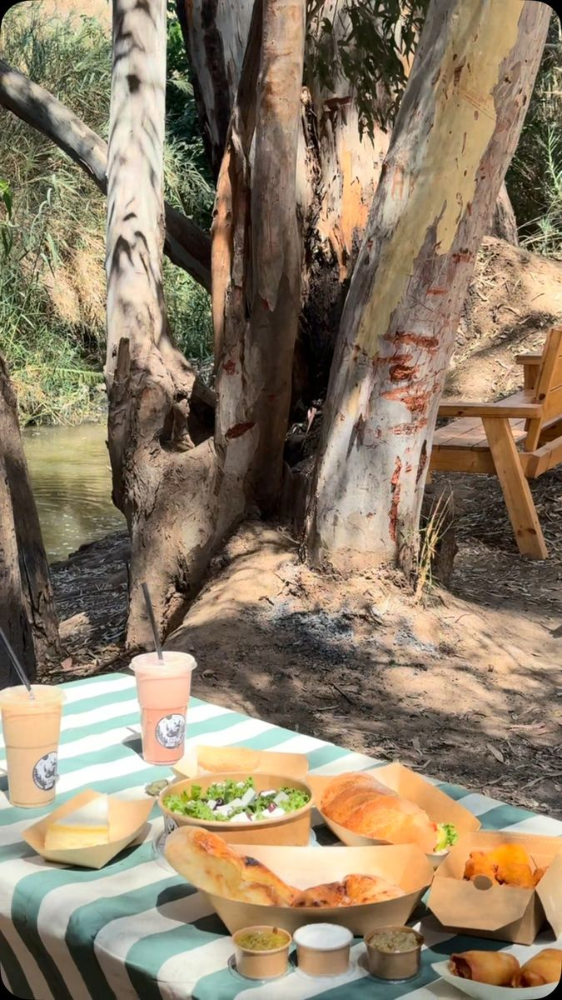

ברבא טבע
עגלת קפה על גדות נחל שורק
- קפה
- קינוח
- נחל
- צל
- בטבע
- בר
עגלת קפה כשרה · חורשת אקליפטוסים · נחל שורק · דקה מכביש 3
בר בטבע
תגידו את השם מהר ותשמעו מה זה. בר בטבע: עגלת קפה כשרה בחורשת אקליפטוסים, על גדות נחל שורק, דקה מכביש 3. באים, מזמינים, ויושבים על המים.
והקינוחים.
קרם ברולה, עוגת גבינה, עוגת שוקולד. בקיץ נחתו גם קינוחי הפירות – מנגו, דובדבן, בננה.
לוקחים אחד עם הקפה, ויורדים לנחל.


המגש הולך איתכם לנחל.




-
מזמינים בעגלה.
קפה, כריך, סלט, קינוח. מה שבא.
-
מקבלים מגש.
הכל בקערות קרפט. נוח לסחוב.
-
חוצים את הגשר.
שתי דקות הליכה בחורשה, והמים כבר נשמעים.
-
יושבים על המים.
שולחנות עץ ממש על הנחל. או מחצלת, איפה שבא.

טיול ריינג׳רים, ופיקניק בין האקליפטוסים.
לשדות ולנחל, ובסוף ארוחה על המים. למשפחות, לזוגות, לימי הולדת ולחבורות קטנות.
פרטים: 052-722-3717 או בהודעה באינסטגרם.
מה כותבים עלינו בגוגל.
-
מאפים והפיצה מפנקים ממש, זה שיש מגש שאפשר לקחת אותו לנחל זה שוס אמיתי. שירות מעולה והאוכל טעים ממש
-
…גולת הכותרת היא באפשרות לקחת את הקפה/מאפה לחצות את הגשר ולרדת לנחל שזורם מימין ושם ההרגשה היא כאילו קפצת לנחל דן. יש שתי פינות ישיבה וניתן לאלתר מקומות נוספים ולהנות מתחושת טבע
-
אוירה טובה ונעימה מקום שקט לנקות את הראש בסוף יום
-
קרון קפה ולידו אהל אירוח מצונן, בתוך חורשת אקליפטוסים: מקום נחמד לסדר ת'נשימה. … על אף הקרבה לכביש 3 יש כאן סוג של אסקפיזם.
-
אוכל טרי וטעים ושירות מעולה. עם דשא סינטטי נוח עם ילדים קטנים. סוף סוף עגלת קפה עם מחירים שפויים. ליד העגלה גישה לנחל. ממליץ בחום!
-
אוכל באופן מפתיע לנראות, טעים מאוד. שירות לבבי והמקום מתוחזק ונקי. גולת הכותרת היא הירידה לנחל שורק, הלוואי והיה נקי יותר
-
הקפה עצמו מצוין, טעמים עשירים וניכרת השקעה אמיתית בכל כוס. … אפילו הקינוחים הקטנים שהיו ליד הפתיעו באיכות שלהם. מקום קטן עם נשמה גדולה.
-
מקום מעולה לעצור באמצע הדרך
אוכל טעים מאוד ממש מפתיע!
מומלץ בחום -
The fried cauliflower is the best I've ever had.
איפה ומתי.
- א׳–ה׳
- 9:00–23:00
- שישי
- 8:00–14:30
- שבת וחגים
- סגור
כשר. תפריט ערב בימי חול.
כביש 3, בכניסה ליסודות – נצר חזני.
שתי דקות מכביש 6, דרום או צפון.